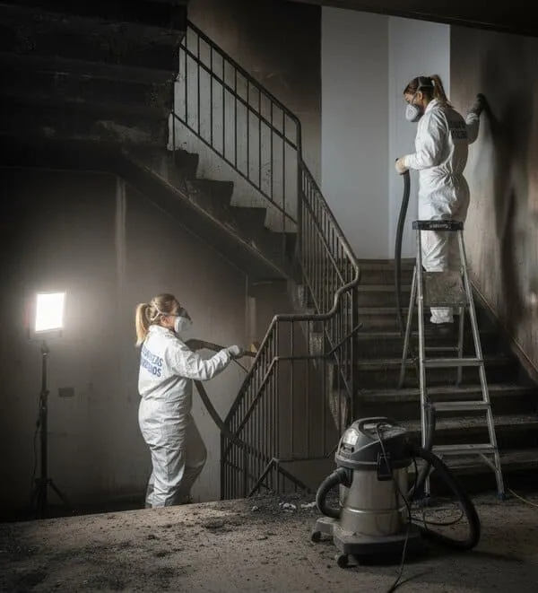

Qué documentos necesitas para reclamar al seguro

Le voy a contar un secreto que no es secreto: las reclamaciones al seguro no las gana quien más razón tiene, sino quien mejor lo documenta. Y documentar es, básicamente, tener una carpeta —física o digital— con todos los papeles en orden. Vamos a montarla juntos, que es más fácil de lo que parece.
La lista de la compra (documental)
- La póliza completa. Con sus condiciones generales y particulares. Es su contrato; téngalo a mano.
- El parte de siniestro. Con el número de expediente que le dieron al comunicarlo.
- Fotos y vídeos. De cada estancia y de cada enser dañado, hechos antes de tocar nada.
- Informe de bomberos o atestado. Si intervinieron, pídalo: acredita la causa y el alcance.
- Informe técnico de la limpieza. El documento con fotos y detalle de trabajos que entrega la empresa especializada.
- Facturas y valoración de enseres. De lo dañado: electrodomésticos, muebles, ropa… lo que pueda acreditar.
- Justificantes de pago de la prima. Para demostrar que la póliza estaba al corriente.
Un truco: cree una carpeta en el móvil el mismo día del incendio y vaya metiendo ahí todo (fotos, PDF del parte, mensajes). Cuando llegue el perito, lo tiene todo en un sitio.
El documento estrella: el informe técnico
Si tuviera que quedarse con uno, quédese con el informe técnico de la empresa de limpieza. Es el que traduce el desastre a un lenguaje que el perito entiende y valora: qué daños hay, qué trabajos se han hecho y cuánto cuestan. Nosotros lo entregamos siempre, con su reportaje fotográfico. Si quiere entender por qué pesa tanto, lea ¿el seguro cubre la limpieza tras un incendio?.
Cómo presentarlo todo
- Ordene los documentos por tipo y póngales fecha.
- Haga una copia digital de todo (escaneado o foto legible).
- Entregue copias, nunca los originales, y guarde un registro de qué entregó y cuándo.
- Acompañe la documentación de un breve escrito resumiendo qué reclama.
Con la carpeta así de ordenada, el proceso de reclamación al seguro va rodado. Y si en algún momento le dicen que no, sabrá que lleva las pruebas de su parte: vea qué hacer si el seguro no cubre el incendio.
En definitiva: reúna, ordene y copie. Una buena carpeta vale más que mil discusiones por teléfono.
Preguntas frecuentes
¿Es obligatorio el informe de bomberos para reclamar?
No siempre, pero si intervinieron, ayuda mucho porque acredita la causa y el alcance del incendio.
¿Qué pasa si no tengo facturas de los muebles dañados?
Puede aportar fotos, valoraciones o cualquier prueba del valor. El perito también estima, pero cuanta más prueba, mejor.
¿Entrego los documentos originales al seguro?
No. Entregue siempre copias y conserve los originales, junto a un registro de qué entregó y cuándo.